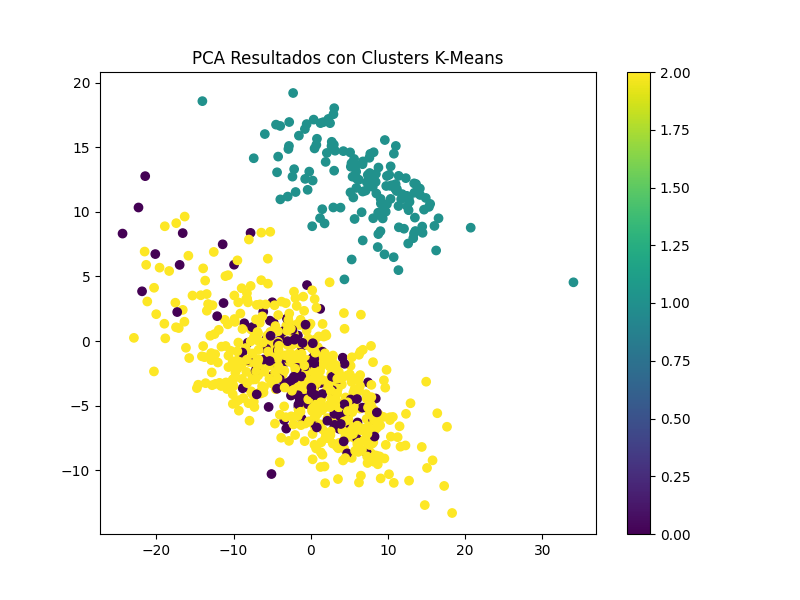
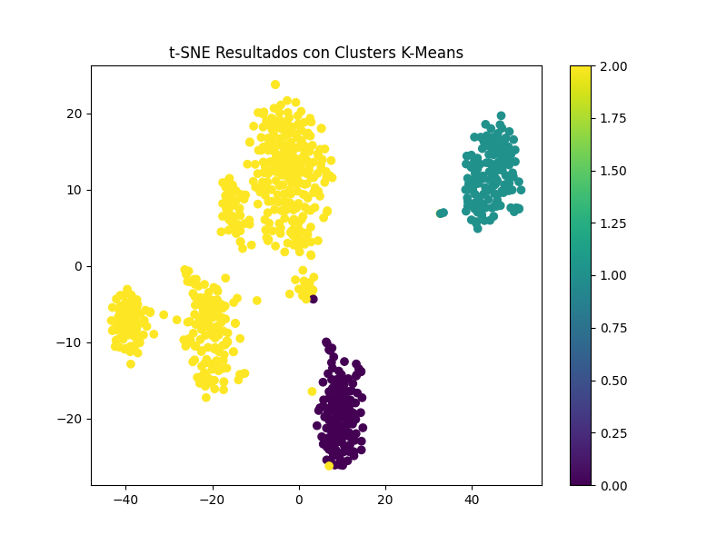
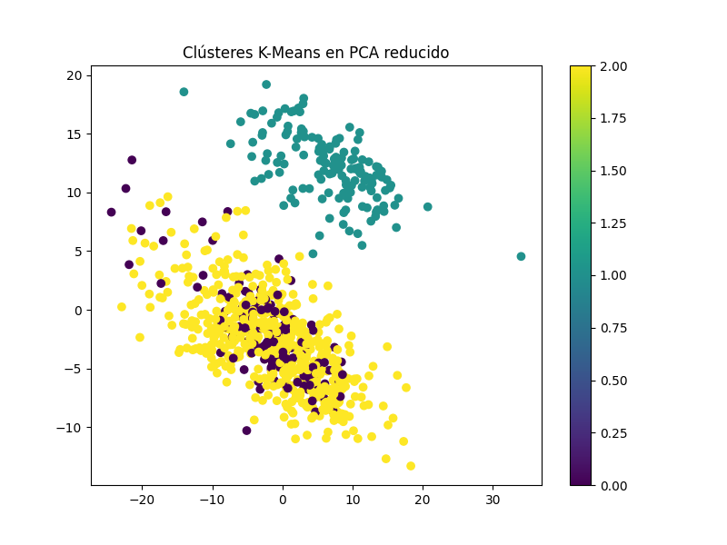
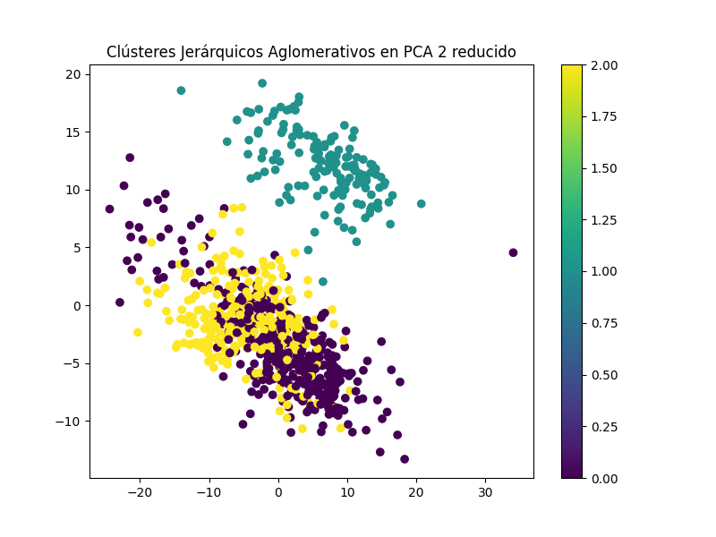

Resultados de Análisis de Clústeres
PCA Resultados con Clusters K-Means

t-SNE Resultados con Clusters K-Means

Clústeres K-Means en PCA reducido

Clústeres Jerárquicos Aglomerativos en PCA 2 reducido
